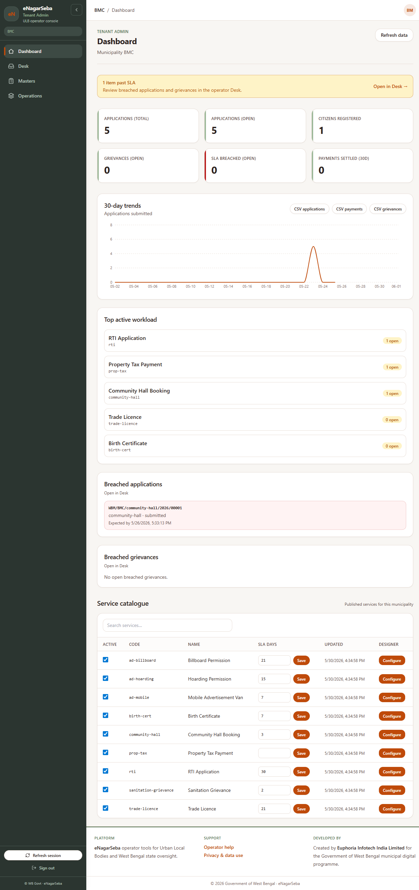
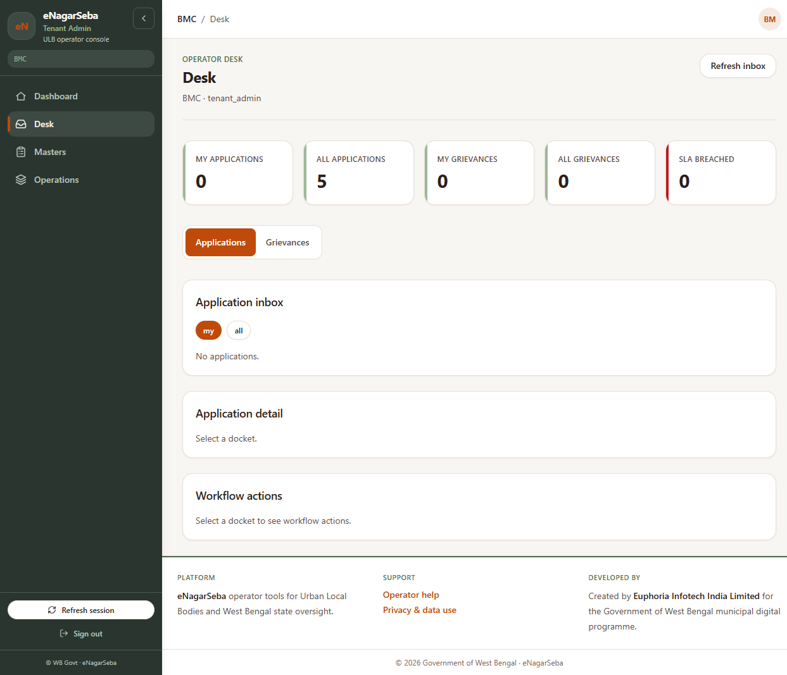

ULB Operator Manual
Nothing matched. Try one word only — for example desk or publish.
Welcome
This manual helps you do your daily work on the computer in eNagarSeba — not how the software is built. You will learn where to click, what each screen is for, and how to set up forms and approval steps for citizen services.
- ULB administrator — sets up services, master lists, fees, and staff. Uses Dashboard, Masters, Operations, and service setup.
- Desk officer — opens applications and grievances and moves them forward. Uses Desk most of the day.
If you only process files, start with Desk — daily work. If you configure services, read Building the application form and Setting up approval steps.
Sign in & menu
- Open the link your IT team gave you (ULB Admin / Tenant Admin login page).
- Enter the username and password issued for you. Do not share your password.
- After login, check the left menu. You should see your municipality code (for example KOL) under the logo.
- If your role was changed today (new menu items missing), click Refresh session at the bottom of the menu, then sign in again if asked.

| Menu name | Who usually sees it | What you do there |
|---|---|---|
| Dashboard | ULB administrator | See totals, late cases, and open service setup |
| Desk | Everyone | Work on citizen applications and grievances |
| Masters | ULB administrator | Keep lists: revenue codes, addresses, departments, grievance types |
| Operations | ULB administrator | Banners, phone number on app, SMS text, staff names |
Dashboard
The Dashboard shows how busy your municipality is and which services need attention.
Summary cards (top)
- Applications — how many citizens applied (total and still open).
- Citizens registered — people who created an account on the citizen app or website.
- Grievances — complaints still open; SLA breached means the complaint is overdue.
- Payments settled — money successfully collected in the last 30 days.
If something is overdue, a yellow warning appears with a link — click it to open Desk.
Download reports
Buttons such as CSV applications download a spreadsheet you can open in Excel. Use this for monthly reports.
Service list (bottom table)
| What you see | What to do |
|---|---|
| Active tick box | Tick = citizens can apply. Untick = service hidden from citizens (old files still in Desk). |
| SLA days + Save | How many working days you allow before a case is “late”. Example: birth certificate 3 days, trade licence 7 days. |
| Configure | Opens the screen to build the form, approval steps, and fees for that service. |
Desk — daily work
Desk is where officers open a citizen’s file and take action — approve, send back, or reject (if your role allows).

Working on an application
- Click the application row (note the docket number — citizens use this to track status).
- Read the citizen’s answers and open each uploaded document.
- Scroll to History to see who did what earlier.
- Choose an action button (only allowed actions are shown). Add a comment if the system asks you to.
- Click the button to confirm. The file moves to the next officer or back to the citizen.
| Button / action | Meaning in plain language |
|---|---|
| Forward | Send to the next officer in the chain |
| Return | Send back to a previous officer in your department |
| Return for correction | Send back to the citizen to fix mistakes or add documents |
| Reject | Only for department head or Chairperson on some services — closes the case |
After approval
On some services the department head sends a payment link after approval. After payment, your office may create a work order and assign a contractor — follow the buttons on that file.
Grievances (complaints)
Switch to the grievance tab in Desk. You can assign the complaint to a colleague, change status, and view photos or map location if the citizen attached them.
Master data
Masters means “lists we use again and again”. Set these up before you build forms and approval flows. Use the small links on the left inside Masters to change section.
Revenue heads
Each fee must link to a revenue head for government accounts. Fill English/Bangla/Hindi names and the accounting code from your finance section.
Address master
Wards, localities, and pincodes citizens choose from. You can upload a spreadsheet — use dry run first to check errors before saving.
Service catalogue
Lists all services in your municipality. Note whether a service came from State template or was created locally. Link each service to the correct department.
Departments & designations
Department = office unit (Health, Licence, etc.). Designation = job role (Clerk, Officer, Executive Engineer). Mark one person per department as department head. Mark Chairperson for top-level reject rights. Then go to Operations → Staff & roles and attach designations to each login.
Grievance catalogue
Types of complaints citizens can file (street light, water, etc.) and sub-types under each. Use simple English codes without spaces (example: broken-streetlight).
Operations settings
| Section | What you change |
|---|---|
| Banners | Messages on the citizen app (maintenance, holidays) |
| Branding & flags | Helpline phone, email, languages (Bangla/English/Hindi) |
| Templates | Text of SMS or email when a case moves forward |
| Knowledge base | Help articles for the Sahayak chat assistant |
| Branding assets | Upload logo and pictures |
| Bookings | Halls, ambulances, or other bookable facilities |
| Staff & roles | Which officer login gets which designation (needed for Desk queue) |
| Grievance SLA & routing | How many hours before a complaint is “late” |
Prefer the normal form on each page. Use JSON advanced only if IT asks you to — it is easy to make a mistake there.
Setting up a service
- Go to Dashboard → find the service in the table → click Configure.
- You will see one long page with: form builder, approval flow, and fees/documents. On the right, Preview shows what the citizen sees.
- Work in order: (1) form, (2) approval flow, (3) fees and document list.
- Each part has Save (keeps a draft) and Publish (goes live for new applications). You must Publish or citizens keep seeing the old version.
If the service was copied from State, use Load State template to copy the state form as a starting point, then adjust for your municipality.
Building the application form
This is what the citizen fills online when applying for a licence, certificate, etc.

Types of questions you can add
| Add this | When to use it | Remember to |
|---|---|---|
| Section heading | Group related questions (“Applicant details”) | Write title in English, Bangla, Hindi |
| Short text | Name, mobile number, ID number | Tick Required if mandatory; set max length |
| Long text | Full address, description | — |
| Number | Quantity, area, amount | Set minimum if zero is not allowed |
| Date | Birth date, event date | — |
| Single choice / Dropdown | Pick one option (trade type, yes/no) | Add each option with labels in all languages |
| Multi select | Pick more than one item | — |
| File upload | PDF or photo the citizen must attach | Set max size (often 5 MB) and allowed types (PDF/JPG) |
Step-by-step: build a trade licence form
- Add a Section titled “Applicant details”.
- Add Short text “Full name” — tick Required.
- Add Short text “Mobile number” — Required, 10 digits.
- Add Dropdown “Trade type” — options General, Food, etc.
- Add File upload “FSSAI certificate” — only for food businesses (see below).
- Click each field and fill English, Bangla, and Hindi labels in the right panel.
- Check Preview on the right — switch language if your ULB uses Bangla on the citizen app.
- Click Save, fix any red error messages, then Publish.
Show a question only sometimes
Example: show “FSSAI certificate” only when trade type is Food. In field settings, use Show only when (another field equals a value). If you are unsure, ask IT — do not use the hidden JSON box unless trained.
Rules between two answers
Example: “End date cannot be before start date.” Use the Cross-field rules panel below the form builder and follow the on-screen labels.
Setting up approval steps
The approval flow decides which officer sees the file in Desk and in what order. Set up departments and designations in Masters first, and assign them to staff in Operations.

Words on the approval screen
| On screen | Plain meaning |
|---|---|
| Stage / step | One stop in the journey (Clerk review, Officer approval, …) |
| Initial | Where the citizen starts (draft application) |
| Terminal / Done | Case finished (approved or closed) |
| Owner designation | Which job role’s Desk queue receives the file |
| Forward / Return | Buttons officers use — you draw these as arrows between steps |
Easy way: use a template button
- Hoarding scrutiny — advertising / hoarding department chain.
- Municipal ladder — large projects: Executive Officer → senior council levels → Chairperson.
- PWD works — public works style chain.
After applying a template, rename steps to match your ULB and check each arrow points to the correct next officer.
Board of Councillors (BOC)
Some services need a BOC meeting decision. Set BOC policy in the fees section (never / always / officer may decide). Only add BOC steps when your municipality rules require it.
Save and publish the flow
- Fix any red error text under the approval diagram.
- Click Save on the workflow section.
- Click Publish.
- Ask a colleague to log in to Desk and confirm the test file appears in their queue.
Fees & documents
When does the citizen pay?
- Upfront only — pay when applying.
- Deferred only — pay after approval (department head sends payment link).
- Both — application fee plus a later licence fee.
Fee types
| Type | Meaning |
|---|---|
| Free | No payment |
| Fixed | Same amount for everyone (enter rupees) |
| Slab | Different amount by choice on the form (e.g. trade type) |
| Computed | Base fee plus per-unit charge (e.g. per square metre) |
Document checklist
List each paper the citizen must upload (Aadhaar, site plan, etc.). Say if it is mandatory and which file types are allowed (usually PDF or JPG, max 5 MB).
Other policies on this screen
- Revenue head — pick from Masters list.
- Municipal sign-off — for high-value work, senior council approval; set threshold in rupees.
Click Save at the bottom of the configuration section when finished.
Words we use
- Docket number
- The application reference citizens quote at the counter (example: TL-2026-00421).
- Designation
- Job role name in the system (Clerk, Licence Officer) — decides whose Desk queue shows the file.
- Publish
- Make your draft live. Until you publish, citizens still see the old form or old approval steps.
- SLA
- Time limit you promised to finish a case. “Breached” means overdue.
- BOC
- Board of Councillors — special meeting approval for some cases.
- ULB
- Your urban local body / municipality.
- State template
- Ready-made service from the state government library — you can adjust it for your town.
Common problems
| What happened | What to try |
|---|---|
| Kicked out to login | Session timed out — sign in again. Do not leave the PC unlocked. |
| Cannot see Dashboard | Your login is Desk-only — ask administrator for admin rights. |
| Save form fails | Red message on screen — usually a missing label or duplicate question name. Fix and Save again. |
| Publish fails | Save first; read error text; call IT if it mentions “workflow” or “validation”. |
| Desk queue empty | Your designation may not be assigned — check Operations → Staff & roles. |
| Citizen still sees old form | You saved but did not Publish the form. |
| Wrong fee amount | Check fee type and which form question drives “slab” fees; amounts are in rupees on screen. |
For anything not listed, note the exact message on screen and the service name, then contact your ULB IT support.